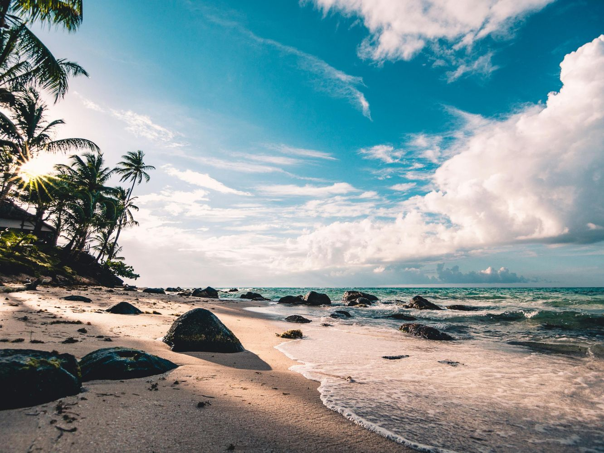
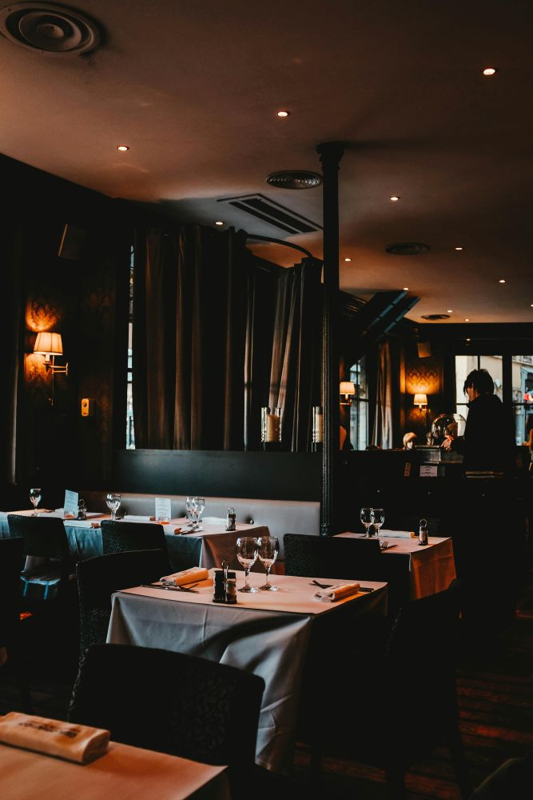

Find insider tips and essential insights to navigate the city's rich culture and dynamic experiences
Accra's vibrant coastline is more than just sun, sea, and sand—it's a unique blend of relaxation, culture, and local life. Whether you're in search of tranquil spots to unwind or lively shores bustling with activity, Accra’s beaches offer something for every kind of traveler. From serene sunsets to bustling beach parties, explore the beauty and diversity of Accra’s stunning beaches.
Accra's coastline is an integral part of the city’s pulse, offering a mix of relaxation, adventure, and local culture. The beaches here are more than just places to enjoy the ocean—they’re social hubs where music, food, and local traditions come together. Beachgoers can often find themselves immersed in Ghana’s vibrant culture, with weekend drum circles, reggae nights, and local food vendors offering fresh seafood and grilled delicacies.
These beaches each offer something different, from the thrill of water sports to the calming sound of the waves, making Accra’s beach culture a must-experience for both locals and tourists alike. Whether you're there for relaxation, exploration, or a taste of local life, Accra's beaches have it all.
Private beach house
Family and group friendly
40 kilometers from the airport
Entry fee: GHS 30
Luxury accomodation starting from GHS 1,400
Private beach resort
Family and group friendly
13 miles from the airport
Entry fee: GHS 30 for adults and GHS 20 for kids. Free for kids below 5 years.
Accomodation available starting at GHS 159
Private beach resort
Family and group friendly
45 kilometers from the airport
Entry fee required
Luxury accomodation starting from GHS 2,600
Accra's fine dining scene is a delightful blend of tradition and sophistication, where the city's vibrant culture meets world-class culinary artistry. From exclusive waterfront restaurants to rooftop venues with panoramic city views, Accra offers an array of high-end dining options. Whether you're looking to indulge in gourmet Ghanaian flavors or enjoy international fusion cuisine, these dining spots promise an unforgettable experience in the heart of the city.
Accra’s fine dining scene is evolving rapidly, offering a unique blend of local and international cuisines that cater to both the sophisticated palate and the adventurous food lover. Whether you’re in the mood for traditional Ghanaian flavors, contemporary African fusion, or global gourmet dishes, the city's top-tier restaurants provide exceptional dining experiences, rich in both ambiance and culinary innovation.
Here are our top recommendations:
Group Friendly Space
Fine Dining
Continental Dishes
Website